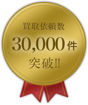
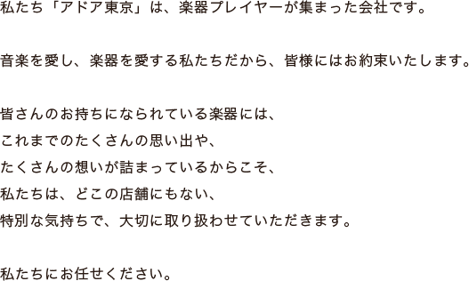
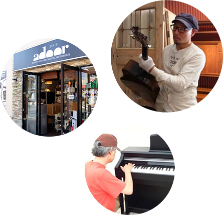
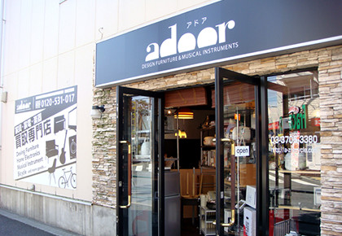
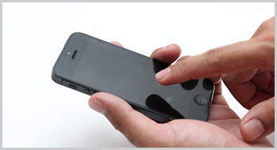
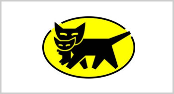
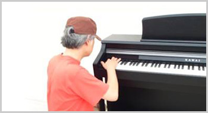
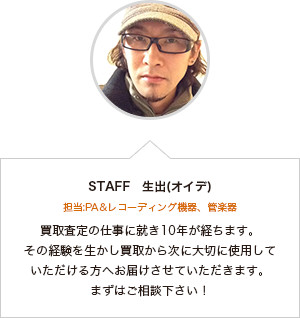
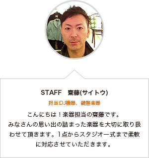
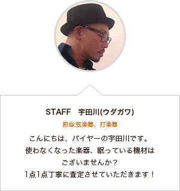

お問合せ・お申し込み
お電話もしくはお問合せフォームにてお問合せください！
0120-531-017(年中無休 9:00～21:00)
営業時間外でお急ぎの方は、お問合せフォームにてお問合せください。



全てのジャンルの楽器から音響機材まで対応致します！お気軽にお問合せください。
小森廣などといった作家物の楽器やプロのアーティストが実際に使用していたものが市場では比較的高値で売買されております。
次にブランド（メーカー）が重要です、例えばマーチン・ギブソンなどといったものです。
アイテムによっては年代や使われている素材が査定に大きく影響する場合があります。良い楽器でもコンディションが悪いと再利用が出来ません。
楽器買取は【アドア】まで！お気軽にお問い合わせ下さいませ。
楽器買取につきましては、やはりメーカーが重要！！
アコギならマーチン・エレキならギブソン・バイオリンならカールヘフナーなどと言った定番のものからヴィンテージギター・オールドバイオリンのようなレア物が市場では比較的高価買取対象アイテムとなっております。工房で製作された作家物の楽器もお取扱致しております！
【アドア】ではレアな楽器・ヴィンテージ機材などが得意です。まずはお問い合わせ下さい。
| アイバニーズ (Ibanez) |
アントンプレル (Anton Prell) |
ヴァンザント (Vanzandt) |
ウエルナー (Werner) |
| ウォル (Wal) |
エピフォン (epiphone) |
キルシュネック (Kirschnek) |
ギルド (GUILD) |
| クノーレン (Knooren) |
グレコ (Greco) |
グレッチ (Gretsch) |
サドウスキー (Sadowsky) |
| ザンドナー (SANDNER) |
ジーアンドエル (G&L) |
シュトア (Stoer) |
スズキ (suzuki) |
| ゼムリンガ (Semmlinge) |
ゾマー (SOMMER) |
タカミネ (takamine) |
バッカス (Bacchus) |
| ハンス グレーセル (Hans Glaser) |
フェルナンデス (FERNANDES) |
フェンダー (Fender) |
ベヒレ (H. Baechle) |
| マーティン/マーチン (Martin) |
ミュージックマン (MUSIC MAN) |
ミュージックマン (MUSICMAN) |
ミューラー (Antonius Mueller) |
| ムーン (MOON GUITARS) |
ヤイリギター (S.Yairi) |
リッケンバッカー (Rickenbacker) |
リッケンバッカー (Rickenbacker) |
| ローべー (Low B) |
ワーウィック (Warwick) |
ワーウィック (Warwick) |
その他 |
フルートやサックス、トロンボーンやトランペットなどの金管楽器、そしてクラリネットやピッコロなど木管楽器まで幅広い買取対象があります。
サックスはフラセル、アメセルなどのヴィンテージ品も対象です。
フルートは総銀など素材も重要ですが、メーカーとコンディションがとても重要です。
メンテナンスの必要がなくタンポの状態も良好なものが査定UPになります。
管楽器の買取は【アドア】まで！お気軽にお問い合わせ下さい。
管楽器買取の人気メーカーに筆頭であがるのが、フルートはムラマツ、ヤナギサワ、ミヤザワ、パール、ヤマハ、サンキョウ、パウエルなど。
サックスはいわずと知れたセルマー、ヤマハ、ヤナギサワ。また、ジュピターやキャノンボール、アンティグア等も人気があります。
その他のメーカーももちろんお買取しておりますので、【アドア】までお気軽にお問い合わせ下さい。
| アレキサンダー (ALEXANDER) |
ヴィンセント・バック (Vincent Bach) |
カイルベルト/カイルベルス (Keilwerth) |
キング (KING) |
| クランポン (Buffet Crampon) |
コーン・セルマー (Conn-Selmer) |
シージーコーン (C.G.CONN) |
ジュピター (Jupiter) |
| セルマー (H.SELMER) |
パールフルート (Pearl) |
ハンスホイヤー (Hans Hoyer) |
ベッソン (BESSON) |
| ホルトン (Holton) |
マリゴ (Marigaux) |
ミヤザワ フルート (MIYAZAWA FLUTE) |
ムラマツフルート (Muramatsu) |
| ヤナギサワ (YANAGISAWA) |
ヤマハ (yamaha) |
ルブラン (Leblanc) |
その他 |
電子ピアノ（デジタルピアノ）やシンセサイザー、エレクトーンやキーボードがお買取対象です。
電子楽器の場合はまずは年式とモデル名、コンディション。
動作をする為の最低限の付属品と発音に問題ないことが条件ですが、モデルによっては10年～20年以上前のヴィンテージ楽器もお買取可能です。
鍵盤楽器の買取はアドアにお任せ下さい。
鍵盤楽器やシンセサイザーといえばヤマハ、ローランド、コルグが人気ですが、ハモンドやMOOG（ムーグ）、NORD、ARTURIA、など海外メーカーも人気があります。
シリーズではコルグのKRONOS、ローランドのJUPITER、ヤマハのクラビノーバやMOTIF等も人気です。
海外メーカーはモデルにかかわらず高額査定になる場合が多いようです。
鍵盤楽器の買取は実績多数のアドアまで！
| アカイ (AKAI) |
アクセス (access) |
アレシス (ALESIS) |
ウォルドーフ (WALDORF) |
| エディロール (EDIROL) |
クラヴィア (Clavia) |
クリーム・ウェア (CreamWare) |
コルグ (KORG) |
| ズーム (ZOOM) |
スタインウェイ (steinway) |
デイブスミス (Dave Smith Instrument) |
ノベーション (NOVATION) |
| ハモンド (HAMMOND) |
フューチャーレトロ (FUTURERETRO) |
マニキン・エレクトロニック (Manikin Electronic) |
ムーグ (MOOG MUSIC) |
| ヤマハ (YAMAHA) |
ローランド (Roland) |
ロジャーリンデザイン (ROGER LINN DESIGN) |
その他 |
ドラムセットや電子ドラム、スネア、シンバル以外でもコンガなどのパーカッション、マリンバ、ビブラフォンなど各種お買取しています。
メーカーやモデル名などお分かりのことがありましたらお電話、メールにてお伝え下さい。
楽器自体の不具合などは少ない種類ですので、サビや割れなどコンディションの具合が査定にかかわってきます。
大型のものが多いので出張買取もお気軽にお問い合わせ下さい。
Pearl（パール）、TAMA（タマ）、ヤマハ、LUDWIG（ラディック）、Mapex（メイペックス）、ローランド、Ayotte（エイヨット）の他にも、SABIAN（セイビアン）、マウンテンリズム、ノーブル＆クーリーなど国内、海外メーカー問わずお買取しています。
また、グレッチやロジャース、ソナーなどのヴィンテージドラムもお買取中です。
ドラム、打楽器買取はアドアにお任せ下さい！
| エヴァンス (EVANS) |
カシオ (Casio) |
クラビア (Clavia) |
コルグ (KORG) |
| ジルジャン (Zildjian) |
スリンガーランド (Slingerland) |
ソナー (SONOR) |
ゾン (Zon) |
| タマ (TAMA) |
パール |
パール (Pearl) |
パイステ (PAiSTE) |
| マーティン (Martin) |
メサブギー (MESA BOOGIE) |
ヤマハ (YAMAHA) |
ラディック (Ludwig) |
| ローランド (ROLAND) |
ロジャース (ROGERS DRUMS) |
その他 |
ターンテーブルやCDJ、ミキサー、DJエフェクターやサンプラー、ヘッドフォンなど様々に買取しています。
電子機器ですので動作に必要な付属品は必須ですが、使用感やコンディションが重要になってきます。
定番のTechnicsの1200シリーズやパイオニア、デノンのCDJ、ALLEN＆HEATH、RANE、UREI（ウーレイ）、Bozakなど海外メーカーが人気があります。
DJ機器、ミキサーなどの買取は【アドア】！にお問い合わせ下さい。
| アカイプロフェショナル (AKAI professional) |
オルトフォン (ortofon) |
スタントン (stanton) |
ソニー (sony) |
| テクニクス (Technics) |
ヌマーク (Numark) |
パイオニア (Pioneer) |
フォステクス (FOSTEX) |
| ブルールーム (BLUE ROOM) |
ベスタクス (Vestax) |
リンプロダクツ (LINN JAPAN) |
その他 |
adoorでは、AUDIXのダイナミックマイクをはじめRODEのコンデンサーマイク、CLASSIC PROのSRスピーカー、パワーアンプ、ミキシングコンソールとステージ用PA機材はもちろん、カラオケや各種イベントに最適な簡易PAシステムから、MTR、電源モジュールまで、PA・レコーディングに関するものならなんでも買取致します。
| アー・カー・ゲー/エー・ケー・ジー (AKG) |
アールエスエス (RSS) |
アールエムイー (RME) |
アイコンデジタル (ICON DIGITAL) |
| アキュフェーズ (Accuphase) |
アギュラー (AGUILAR) |
アポジー (APOGEE) |
アムクロン (AMCRON) |
| アンペグ (AMPEG) |
エーピービー (APB) |
エスエイチ (SH) |
エムエックスエル (MXL) |
| エレクトロボイス (EV) |
オーディオテクニカ (AUDIO TECHNICA) |
オーディックス (AUDIX) |
オーラレックス (AURALEX) |
| カービン (CARVIN) |
キャド (CAD) |
クラシックプロ (CLASSIC PRO) |
サウンドクラフト (SOUND CRAFT) |
| サウンドデヴァイス (SOUND DEVICES) |
サムソン (SAMSON) |
シーエスーイー (CSE) |
ジェーティーエス (JTS) |
| ジェービーエル (JBL) |
シムプロシード (SYMPROCEED) |
シュア (Shure) |
セイモアダンカン (SEYMOUR DUNCAN) |
| ゼンハイザー (SENNHEISER) |
ソニー (SONY) |
ソリッドステートロジック (SOLID STATE LOGIC) |
ソントロニクス (SONTRONICS) |
| ターボサウンド (TURBOSOUND) |
ダイナコード (DYNACORD) |
ダイナコード (DYNACORD) |
チューブテック (TUBETECH) |
| ティーシーエレクトロニック (TC ELECTRONIC) |
テｨーシーヘリコン (TC HELICON) |
テレフンケン (TELEFUNKEN) |
トーア (TOA) |
| トフトオーデｨオデザイン (TOFT AUDIO DESIGNS) |
ニーヴ (Neve Electronics) |
パワーソフト (Powersoft) |
ピーヴィー (PEAVEY) |
| ファーマン (FURMAN) |
フォステクス (FOSTEX) |
プリズムサウンド (PRISM SOUND) |
プリモ (PRIMO) |
| プレソナス (PRESONUS) |
プロツールス (Pro Tools) |
ベイヤー (BEYER) |
ヘイルサウンド (HEIL SOUND) |
| べリンガー (BEHRINGER) |
ボーズ (BOSE) |
ボルトアンペア (VOLT AMPERE) |
マーシャル (Marshall) |
| マイダス (MIDAS) |
マッキー (MACKIE) |
マッキー (MACKIE) |
マンレイ (MANLEY) |
| メサブギー (MESA BOOGIE) |
ヤマハ (YAMAHA) |
ユニバーサルオーディオ (UNIVERSAL AUDIO) |
ユニペックス (UNIPEX) |
| ラインシックス (LINE6) |
ラジアル (RADIAL) |
ラブ・グルッペン (Lab.gruppen) |
ルパート・ニーブ・デザイン (RUPERT NEVE DESIGNS) |
| レキシコン (LEXICON) |
ロード (RODE) |
EAW (EASTERN ACOUSTIC WORKS) |
QSC (QSC House of K) |
| SPL (sound pressure level) |
その他 |
日本全国対応！3つの方法をお選びいただけます！あなたのご要望に柔軟にお応え致します。
東京都、神奈川県については出張買取いたします！
場所によっては即日買取も可能！お気軽にお問い合わせください。


お電話もしくはお問合せフォームにてお問合せ下さい。おおよその買取価格を提示させて頂きます。

お客様で梱包する必要はございません、そのまま運送会社（クロネコヤマト）へお渡しください。
運送会社が丁寧に梱包致します。
集荷予約：0120-008-008
※【らくらく家財宅急便】は元払い発送のみとなっておりますのでお客様のほうで一旦送料をお支払いいただきます。(送料は地域によって異なりますが、おおよそ2,000円から4,000円程度です。)
※運送保険（50円～200円）は必ずお掛け願います。
※送料につきましては買取成立/不成立にかかわらず当社で負担致します。
※荷物を送る際に銀行口座（金融機関名・お名前・口座番号）と免許証もしくは保険証のコピーを同封願います。

届いた商品を1点1点大切に査定させていただきます。
査定金額をご連絡致します。当日、指定口座へご入金致します。
※（土・日・祝日）につきましては翌日のご入金となります。



この度はお問い合せ頂き誠にありがとうございました。
改めて担当者よりご連絡をさせていただきます。
このメールに心当たりの無い場合は、お手数ですが
下記連絡先までお問い合わせください。
この度はお問い合わせ重ねてお礼申し上げます。